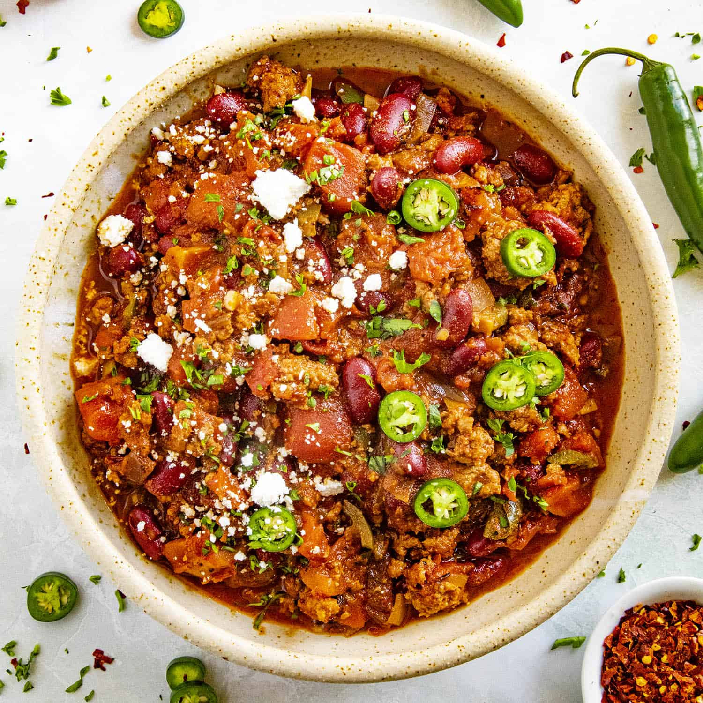

Chipotle Chili

Ingredients:
- 2 lbs ground beef
- 1 lb italian sausage
- 1 large onion, diced
- 1 TBS minced garlic
- 2 cans kidney beans
- 2 cans chili beans
- 2 cans diced tomatoes
- 2 cans crushed tomatoes
- 2 ribs celery, chopped
- 1 green bell pepper, coarsely chopped
- half red bell pepper, chopped
- half can chipotle chilis in adobo sauce, finely chopped
- 3oz bacon bits
- 1 TBS chili sauce
<1l>1 TBS hot pepper sauce
- 1 TBS chili powder
- 2 teaspoon brown sugar
- 1 teaspoon ground cumin
- 1 teaspoon salt
Directions:
- Heat a large skillet over medium-high heat. Cook and stir beef and sausage in the hot skillet until some of the fat renders, 2 to 3 minutes.
Add onion and garlic; cook and stir until meat is browned and crumbly, 5 to 7 minutes more. Transfer beef mixture to a slow cooker.
- Stir kidney beans, chili beans, diced tomatoes, crushed tomatoes, celery, bell peppers, chipotle chiles, bacon bits, chili sauce, hot pepper sauce, chili powder, brown sugar, cumin, and salt into beef mixture.
- Cook until vegetables are tender and celery retains a slight bite, 6 to 8 hours on Low or 3 to 4 hours on High.